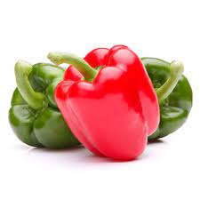

Pan Francès

Opcion Vegana:
Pimenton
Berenjena

Llevar a los hogares una parte deliciosa de la costa italiana, con sabores caseros y del hogar, en sus presentaciones: ya preparado, pre-preparado; que puedan gozar y divertirse en familia construyendo con cada bocado sabores y texturas distintas. Y para aquellos que deseen disfrutar dela experiencia en el restaurante.
Busca posicionarse como una proveedora a restaurantes en varios ámbitos, ampliándose a tener nuestra tienda física y experimental, donde cada degustador pueda en este espacio único construir sus brusschetas. Que las personas de todo el país y Latinoamérica goce de sabores propios y frescos.
Apoyamos a los campesinos de la región, que proporcionan alimentos frescos, orgánicos y recién salidos de la tierra. Buscamos disminuir el impacto ambiental de todos los envases que usamos para que sus productos lleguen frescos, seguros y libres de cualquier contaminante externo. Extendernos a productos dulces y agridulces, conservando la misma frescura y productos orgánicos. Cada persona que adquiere nuestros productos puede reconstruir las recetas a su gusto. Pueden sentirse seguros de que el manejo de caga producto es con sumo cuidado y todas las medidas sanitarias.
Valentina Cadavid Rozo
Valentina_cad@hotmail.com
3052901965
Calle 3 #5-15, Bugalagrande
Bogotá, Calle 163b #50-80
CC. CRISTALES PLAZA, CALI